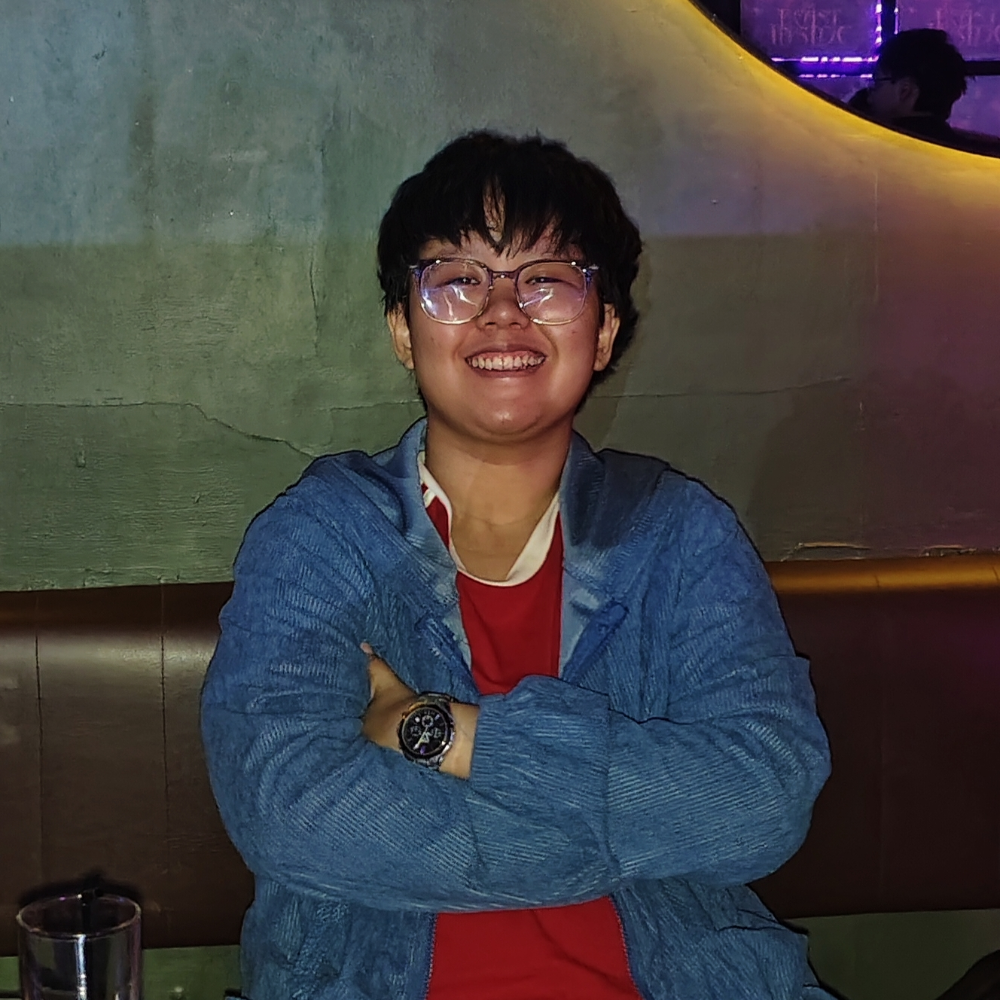

About Me

Hey, people of the world. I go by Archie. I am a BA Multimedia Studies sophomore residing in the province of Bulacan. I am a Sagittarius. I like listening to music, playing video games, watching movies and shows, and singing occasionally. I wish to hone my basic skills in voiceover, song covers, and multimedia contents to delve into the music or voice acting industry.
Things I Love
- Favorite Artists: Sabrina Carpenter, Ariana Grande, TXT, Cup of Joe, Maki, BINI, VXON
- Favorite Shows: Victorious, Dynasty (2017), Drag Race Philippines
- Favorite Games: Grand Theft Auto V, Roblox, Call of Duty Mobile
My Passion Projects
One of my most recent passion project is finishing a full proper cover of one of my favorite songs, "positions", because of how the song and Ariana Grande herself incorporated so many vocal layers. I challenged myself to get the harmonies as accurate and close to the original, which was a fun yet time-consuming activity as a perfectionist. I do most of my song covers on BandLab nowadays, but I also made one using Audacity a very long time ago. Feel free to listen to the full cover below!
BandLab Song Cover
positions (org. Ariana Grande) (2026)
Audio-Visual Presentation Voiceover
During 12th grade representing the HUMSS strand, I was assigned to voice over our annual United Nations AVP about the country Nigeria. The voiceover highlights the unique culture, festivals, natural habitats, and places present within the country.
Graphic Design
The realization that I enjoyed graphic designing was when I encountered it frequently during senior high school. Up until then, I saw making posters and infographics as solely an academic requirement. However, being in HUMSS and surrounded by more creative people, I started enjoying it too. Now I'm in college, I can confidently say that I love designing digital materials, particularly logos and pubmats.
Contact Me
E-mail: adcoronel1@up.edu.ph
BandLab: @zkarchwn